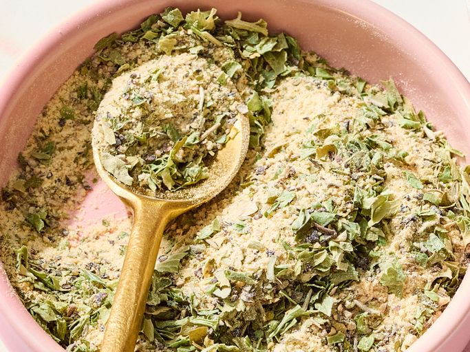

Making ranch dressing? Mix this ranch powder with mayonnaise and buttermilk, and pour some over your favorite salad. Or use it to make ranch dip by mixing it with sour cream and buttermilk.
Mix parsley, seasoned salt, pepper, garlic powder, onion powder, and thyme together in a small bowl.
Mix with 1 cup mayonnaise and 1 cup buttermilk for ranch dressing, or mix with 1 3/4 cups sour cream and 1/4 cup of buttermilk for ranch dip. Cover and chill for at least 2 hours before using.